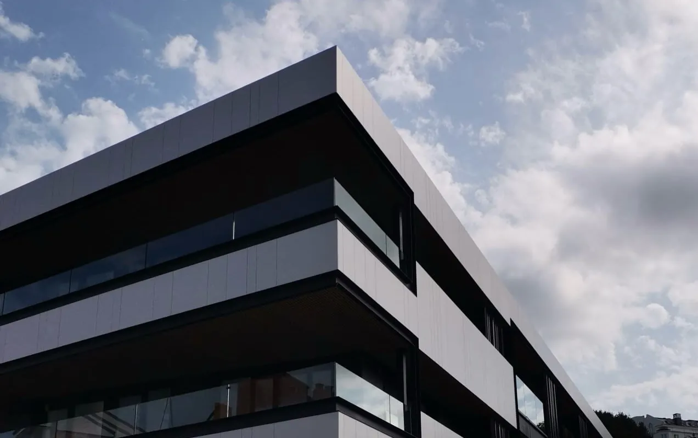
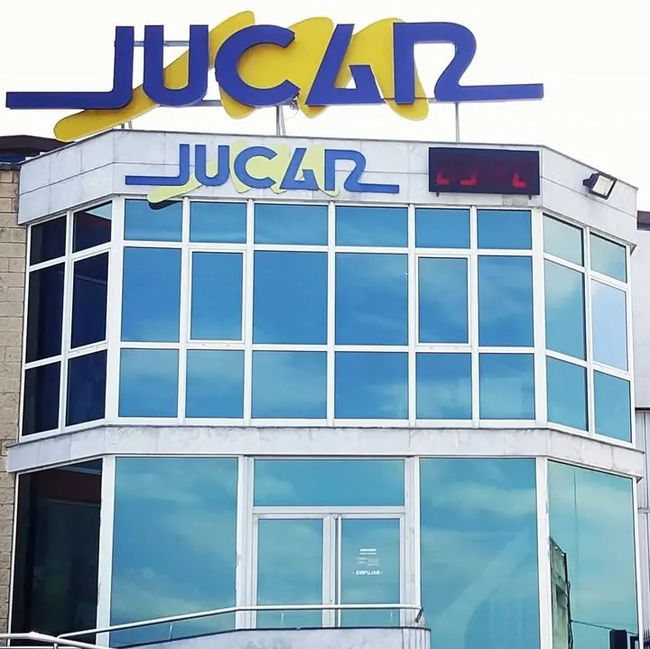

Vidrios Jucar · Heras, Cantabria
Fabricando vidrio en Heras
Más de 40 años de oficio. Mamparas, escaleras, cerramientos, espejos y vidrio para obra. Lo fabricamos en nuestra nave y lo colocamos en Cantabria, País Vasco, Navarra, La Rioja y Asturias.
O llama al 942 54 15 74, de lunes a viernes
- Más de 40 añosFabricando y colocando vidrio
- Nave en HerasCon exposición en la Recta de Heras
- Guardian SelectLicenciatarios desde 2021
- 4,0 en Google74 reseñas
¿Para casa o para obra?
Trabajamos para particulares y para profesionales. Elige por dónde empezar.

Para tu casa
Mamparas, escaleras y barandillas, cerramientos de terraza y porche, techos de vidrio, puertas y espejos. Vamos a medir sin compromiso.
Ver qué hacemos
Para profesionales
Vidrio de cámara, laminados de seguridad, muro cortina y lucernarios para obra, carpintería y fachadas.
Ver la página
Trabajos
Mamparas, escaleras, terrazas, fachadas: lo que hemos hecho, por tipo.
Ver los trabajos
Exposición en Heras
Ven a ver cerramientos, correderas y mamparas en la Recta de Heras.
Sede y horario
Algunos trabajos
Fotos de obras que hemos publicado en nuestro Instagram. Pulsa en cualquiera para verla en grande.
Escalera con vidrio y pasamanos de madera Balcón con laminar 8+8 Mampara de baño Separación de espacios con perfil negro Porche cerrado con techo de vidrio Barandilla de vidrio en una terraza
La casa
Más de 40 años con el vidrio. En la nave de Heras canteamos el vidrio y montamos el vidrio de cámara con maquinaria propia. Después lo colocamos nosotros, en casas, locales y obras.
Línea de vidrio de cámaraAquí montamos el doble acristalamiento. AristadoraPara que el canto del vidrio salga matado y se manipule con menos riesgo. ColocaciónCon camión grúa cuando el vidrio va en altura.
El equipo de Vidrios Jucar, en Heras
Guardian Select, licenciatarios desde 2021
Lo que dicen en Google
74 reseñas en Google Maps
“Fueron unos grandes profesionales rápidos y amables [...] Son 100% recomendables.”
luz magdalena · Reseña en Google
“la chica que nos atendió nos guío todo el rato, muy maja y han quedado perfectas.”
Oscar · Reseña en Google
“Era complicado de hacer y de poner pero fueron super profesionales [...] Ha quedado espectacular.”
almudena mora · Reseña en Google
“La atención en la oficina tanto de la chica como a la hora del montaje de Hector ha sido muy buena.”
Ignacio Salas Lanza · Reseña en Google
Fragmentos de reseñas publicadas en Google, copiados tal cual. Leer las reseñas en Google
Dónde estamos
Nave y exposición en Heras
- Dirección
- Recta de Heras s/n, 39792 Heras (Cantabria)
- Horario
- Lunes a viernes, de 9:00 a 14:00 y de 15:00 a 18:00
- Teléfonos
- 942 54 15 74 · 942 54 16 38
- presupuestos@vidriosjucar.com
Presupuesto sin compromiso
Cuéntanos qué necesitas y dónde. Vamos a medir y te damos el presupuesto sin compromiso.
También en el 942 54 16 38 o en presupuestos@vidriosjucar.com. Lunes a viernes, de 9:00 a 14:00 y de 15:00 a 18:00.